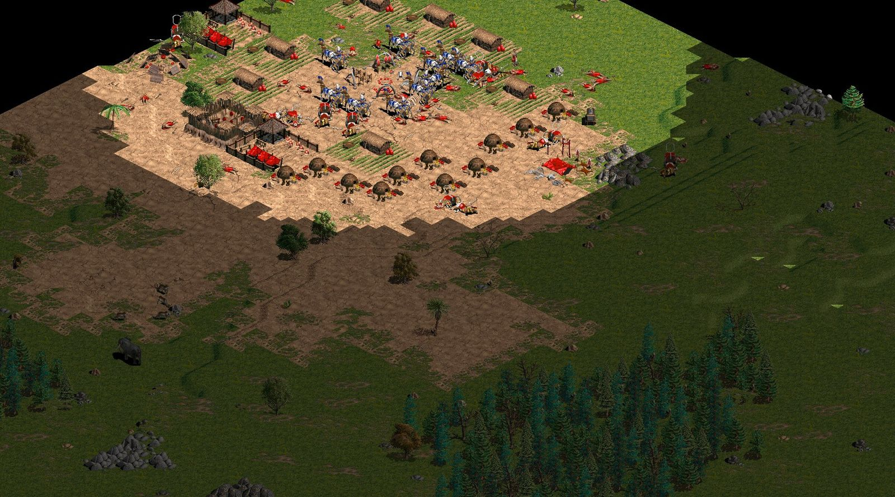
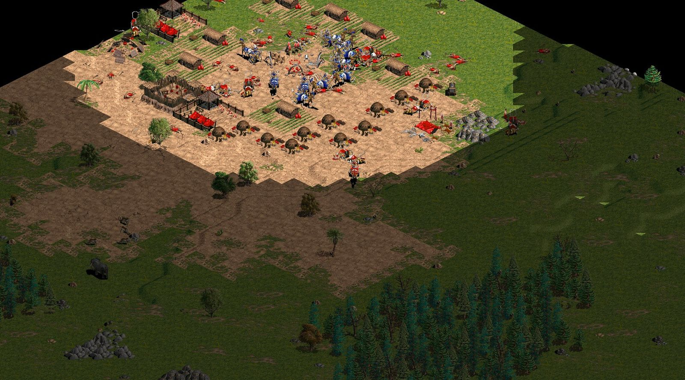

Vảy E chặn đường: lần bật đầu tiên
Kịch bản ép ngày 15/10 (2 bot Egyptian, bắt đầu đời 3, tài nguyên cao, bản đồ mở): P1 (xanh) có 10 cung R kéo sang làng P2 (đỏ); P2 có 6 cung R, hễ địch vào trong 10 ô là chạy. Bản ghi D:\Game\AoE-MapCap\Video\Raw\2026-10-15_141016_tran1.aoerec, giây 1046 (17:26), góc nhìn P1, quanh ô (121, 24).
Log của P1: ETRAP #5782 (Soldier-Chariot2) runs 1.1 tiles/s from 3 chasers into a forest edge: 3 foundations across its way at (121,24), rồi 2 s sau chase of #5782 over (dead): 2 foundations, 3 orders, deleted in 20 s. Móng xuất hiện 0,6 s thực sau lệnh; con cung R chết trước khi tới dãy móng, nên lần này chưa thấy được nó bị chặn; cơ chế kích hoạt, đặt móng và dọn móng đều chạy đúng.
Giây 1044: cung R đỏ (giữa ảnh, dưới) bắt đầu chạy xuống phía nam, cung xanh đuổi theo

Giây 1047: ngay sau khi vảy 3 móng trước mặt nó
